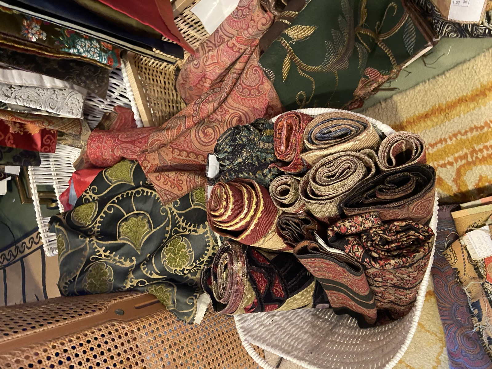

Cime Tempestose

↓ ScrollAn upcycling and styling studio that gives a second life to very high quality fabrics.
We work with what already exists, rescuing fabrics from forgotten archives, atelier corners, cushion covers and old curtains, and reworking them into one-of-a-kind pieces for bold personalities who want to look unique, different, and a bit funky.
Anna's textiles
Out in Spring 2027
Genesis & inspiration
The inspiration for this project came in 2021, during covid, while sorting out old textiles in my grandmother's atelier.
My grandmother Anna is a fantastic interior designer and antiques collector, and over the years she has collected scraps of curtains, sofa patterns, cushion covers, and other leftovers from her commissioned projects. Anything with a good hand or a good print.
She's travelled the world looking for unique objects and fabrics. Her style and eye were forever changed by her trips to India, Myanmar, Tibet, Afghanistan, Japan (but also Peru and Colombia), finding commonalities as well as unique cultural features in all these fascinating countries where craftsmanship is still prized.
There's a Japanese word for collecting miscellaneous objects in the house: Komono, the systematic categorization and mindful organizing of everyday items within the home. In Chinese there is a similar concept, wù jìn qí yòng: anything capable of serving a purpose should be utilized to its maximum potential rather than being thrown away or wasted. In Europe too: Italians say non si butta via niente (nothing is thrown away), especially in the kitchen, where some of the best dishes were born out of leftovers: polpettone, panzanella, frittata di pasta, arancini. She did this with textiles instead, not wanting to let them go. They can always come in handy.
I don't mean to hide behind historically and culturally distant words and culturally appropriating them. It's a coincidence. A few days before writing this, I visited the MAO (the Museum of Oriental Art in Turin), where I came across Waste Not (2005), a large-scale installation by the Chinese artist Song Dong. Originally a collaboration with his mother, Zhao Xiang Yuan, the work gathers the entire contents of her Beijing home, amassed over her lifetime. The concept of wu jin qi yong ("waste not") was a requisite guideline for survival for the generation that lived through the hardships of the Cultural Revolution (1966–1976).
It made me think of the difference between collecting for necessity and collecting for pleasure, and about the trajectory of consumerism, from necessity for some to hobby for others. Whatever pushes people to collect, categorise and keep, their objects are always a door to their hearts, their minds, their way of perceiving the world and its unexpected tricks. It's important to look at people's belongings, whatever they may be, to truly dive into their memory and what activates their senses. Walking around his mother's objects was a reminder of what a crisis can induce you to do, and what it leaves of you long after that time has passed. Some actions never leave us; they become a source of truth for whoever comes to know us later.
Luckily enough, I found myself in the room when things slowed down during covid, sorting out the atelier a bit. Gems couldn't stop coming out of corners. The idea to reuse them surfaced there, and stayed an idea until 2026.
The mission is very simple, nothing new: repurposing very high quality fabrics to create unique pieces that last. The pieces will speak to bold personalities who want to look unique, different, and a bit funky. It speaks to those who refuse to buy scrappy fast-fashion items that don't last three washing rounds, and instead prioritise circularity.
Cime Tempestose doesn't sell itself as a sustainable brand. We don't source organic cotton, nor run repairs or recycling processes. We're an upcycling and styling studio that gives a second life to waste.
We hope the humans who will buy, inherit, or receive our pieces will feel empowered and more courageous to move through the world with care and compassion for its people, animals, and objects, and that they will feel inspired to turn their own old objects and garments into something fun and useful. No limit to imagination!!
At the atelier
Anna, mom and I, scavengingProject phases
A project in stages. The first prototypes will guide the product direction. No decisions made before having them in hand.
Textiles gathering, pattern making & upcycling discovery
Cataloguing Anna's textile archive. First cut-and-sew trials with Marta, the seamstress, to understand what can be done with the available materials: hand, rigidity, fibre content, piece size.
- Inventory of available textiles
- First prototypes with Marta, the seamstress: one jacket + one bag
- Pattern tests on recovered fabrics
- Feasibility assessment per garment
First prototype with Marta · sculptural heavy-denim bag
Product direction
Once the first prototypes are in, decide which product types to pursue: accessories, structured garments, a small capsule. Define the identity and tone of voice.
To be defined after the first prototypes.
Production & refinement
Run the chosen pieces, refine finishes, packaging, product photography.
Narrative & distribution
Tell the story and open sales channels.